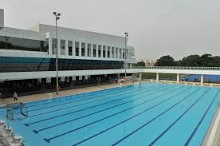

<!DOCTYPE html>
<html>
<head> 
<title>MAP</title>
<meta name="viewport" content="initial-scale=1.0, user-scalable=no">
<meta charset="utf-8">

<style>
html, body, #map-canvas {
        height: 100%;
        margin: 0px;
        padding: 0px
        }
</style>

     <script src="https://ajax.googleapis.com/ajax/libs/jquery/2.0.0/jquery.min.js"></script>
     <script type="text/javascript"
             src="https://maps.googleapis.com/maps/api/js?sensor=false">
     </script>
     <script type="text/javascript">

       var map;
       var homeLatLng = new google.maps.LatLng(1.33235, 103.775440);
    
     function initialise()
     { console.log(location);
     
       var landmarks = JSON.parse("http://liuclaudia.github.io/NPMap/landmark.json")

       var mapOptions = {
       center: new google.maps.LatLng(1.33235, 103.775440),
       zoom: 18,
       mapTypeId: google.maps.MapTypeId.ROADMAP
     };

       var map = new google.maps.Map(document.getElementById("map-canvas"), mapOptions); 
       var infoWindow = new google.maps.InfoWindow();
       
       var polylineCoords = [
       new google.maps.LatLng(1.337592, 103.778266),
       new google.maps.LatLng(1.337592, 103.778266),
       new google.maps.LatLng(1.336916, 103.777322),
       new google.maps.LatLng(1.336369, 103.776721),
       new google.maps.LatLng(1.335629, 103.776152),
       new google.maps.LatLng(1.335189, 103.775380),
       new google.maps.LatLng(1.333988, 103.773803),
       new google.maps.LatLng(1.333140, 103.771796),
       new google.maps.LatLng(1.332475, 103.770916),
       new google.maps.LatLng(1.331757, 103.772172),
       new google.maps.LatLng(1.331446, 103.773180),
       new google.maps.LatLng(1.330856, 103.773137),
       new google.maps.LatLng(1.330008, 103.773534),
       new google.maps.LatLng(1.329665, 103.775122),
       new google.maps.LatLng(1.330695, 103.775423),
       new google.maps.LatLng(1.329612, 103.777440),
       new google.maps.LatLng(1.331853, 103.777740),
       new google.maps.LatLng(1.334728, 103.777955),
       new google.maps.LatLng(1.336240, 103.778255),
       new google.maps.LatLng(1.337313, 103.778545),
       new google.maps.LatLng(1.337592, 103.778266)         
       ];

       var polyline = new google.maps.Polyline({
       path: polylineCoords,
       geodisc: true,
       strokeColor: '#0000FF',
       strokeOpacity: 0.8,
       strokeWeight: 1,
     });

       polyline.setMap(map);

       var currentInfoWindow =  null;

       var marker1 = new google.maps.Marker({
       position: new google.maps.LatLng(1.33560, 103.776900),
       map: map,
       icon: 'https://chart.googleapis.com/chart?chst=d_text_outline&chld=000000|12|h|FFFFFF|_|16',
       });
       var infowindow1 = new google.maps.InfoWindow({
       content: "<div><p>Facilities<li>Swimming Pool</li></p></div>"
       });
       google.maps.event.addListener(marker1, 'mouseover', function(){
       if (currentInfoWindow != null){
           currentInfoWindow.close();
       }
       infowindow1.open(map, marker1);
       currentInfoWindow = infowindow1; 
       });
       google.maps.event.addListener(map, 'zoom_changed', function() {
       var zoom = map.getZoom();
       if (zoom <= 15) {
       marker1.setMap(null);
     } else {
       marker1.setMap(map);
     }
     });  
   
      var marker30 = new google.maps.Marker({
       position: new google.maps.LatLng(1.33302, 103.775800),
       map: map,
       icon: 'https://chart.googleapis.com/chart?chst=d_text_outline&chld=000000|12|h|FFFFFF|_|58'
     });
      var infowindow30 = new google.maps.InfoWindow({
       content: "<div><p>Facilities<li>Coffee Bean</li><li>Student Study Lounge</li></p></div>"
     });
       google.maps.event.addListener(marker30, 'mouseover', function(){
       if (currentInfoWindow != null){
           currentInfoWindow.close();
       }
       infowindow30.open(map, marker30);
       currentInfoWindow = infowindow30; 
     }); 
       google.maps.event.addListener(map, 'zoom_changed', function() {
       var zoom = map.getZoom();
       if (zoom <= 15) {
       marker30.setMap(null);
     } else {
       marker30.setMap(map);
     }
     });

     }

      google.maps.event.addDomListener(window, 'load', initialise);
     
     </script>
     

</head>
<body>

<div id="map-canvas"></div>

</body>
</html>
